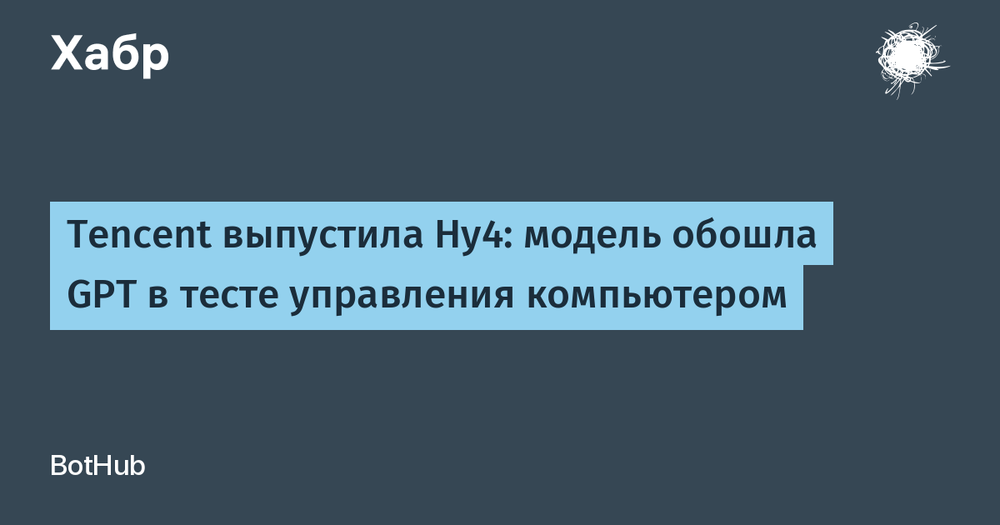

Вчера Tencent представила полную версию своей флагманской модели Hy4 (линейка Hunyuan). Главное отличие от августовского превью — появились зрение и умение управлять компьютером: модель читает графики и документы, рассуждает по нескольким изображениям сразу и сама работает с командной строкой и графическими интерфейсами. Напомню, 28 августа вышел только текстовый Hy4 preview: смесь экспертов на 770 млрд параметров с 49 млрд активных на токен и контекстом более миллиона токенов. Теперь тот же фундамент научился «смотреть», и Tencent ставит Hy4 в один ряд с компьютерными агентами Anthropic и OpenAI.
Tencent сама опубликовала сравнение в тесте управления компьютером OSWorld 2.1: Hy4 набрала 78,9 балла, Claude Opus 5.5 — 81,8, Kimi K3.1 Pro — 79,6, GPT-6.1 Sol — 75,2. В агентском тесте APEX-Agents у Hy4 75,2 против 72–73 у DeepSeek V4.1 Flash. Важная оговорка: это результаты самой Tencent, независимые лаборатории их ещё не воспроизвели, и до публикации весов проверить цифры на своей машине нельзя.
Hy4 уже доступна через API: 0,834 доллара за миллион входных токенов и 2,501 — за выходные, когда 15 ноября закончится бесплатный лимит; до декабря TokenHub обещает скидку 50%. А вот веса удивили: августовское превью Tencent выложила под свободной лицензией Apache 2.0 на Hugging Face, а полную версию отдаёт только через API — веса и «системную карту» обещают «позже». Это выбивается из открытой стратегии, которой весь год следовали и Tencent, и DeepSeek, и Alibaba с Kimi: на фоне их открытых релизов закрытая флагманская модель выглядит неожиданно.
Управление компьютером — та способность, которая превращает чат-бота в агента, способного реально нажимать кнопки в чужих системах. Именно поэтому за такими моделями сейчас охотятся и разработчики, и безопасники: агент, который умеет работать с интерфейсом, умеет и натворить дел. Tencent входит в эту гонку третьей волной, и теперь рынку придётся сравнивать не только бенчмарки, но и то, кто из китайских лабораторий вообще останется открытым.